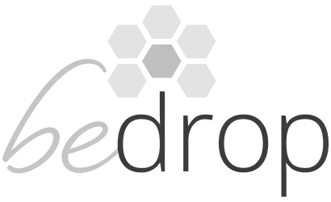
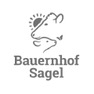

KI fest verankern und mindestens 20% mehr mit dem selben team schaffen
Wir bauen das Fundament, auf dem KI-Projekte dauerhaft funktionieren.
Jetzt anfragenPS: Wertvolle Ressourcen & Downloads gibts zum Schluss 👇
KI bleibt
aber wie nimmt man das Wertvolle mit und filtert den Hype?
Um sicherzustellen, dass ihr das wirklich Wertvolle aus KI für euer Unternehmen herausholt und den Hype sinnvoll filtert, setzen wir tiefer an.
Wir starten nicht mit Tools, sondern mit dem, was wirklich zählt: einer klaren Strategie, die auf euren Zielen basiert. Wir optimieren Prozesse, analysieren eure Systeme und schaffen so die Grundlage dafür, dass KI zu einem festen Bestandteil eurer Organisation wird – nicht als kurzfristiger Trend, sondern als nachhaltiger Wachstumstreiber.
Unser Weg zum nachhaltigen Ergebnis in 3 Phasen
1. Analyse & Strategie
Gemeinsamer Workshop zur Definition eurer Ziele, Audit eurer Tools & Prozesse, Potenzialanalyse & maßgeschneiderte KI-Strategie.
2. Fundament bauen
Aufbau einer zentralen Wissensbasis, Optimierung von Kernprozessen, Priorisierung der Quick-Wins mit höchstem ROI.
3. Implementieren & Skalieren
Roll-out der ersten Automationen (bis zu 5/Monat), Team-Schulungen & Dokumentation für nachhaltige Verankerung und internes Wachstum.
Shortcut-Dienstleister vs. Workglaze-Methode
❌ Der schnelle Weg
- Fokus auf schnelle Tool-Implementierung
- Oft fehlende Integration & Strategie
- Wenig Team-Einbindung ("Blackbox")
- Systeme brechen oft nach kurzer Zeit
- Kurzfristige Effekte, selten nachhaltig
✅ Die Workglaze Methode
- Strategische KI-Integration basierend auf Zielen
- Solides Fundament für langfristigen Erfolg
- Aktive Team-Schulung & Wissensaufbau
- Robuste, skalierbare Prozesse
- Stetig wachsender, messbarer ROI
Maßgeschneidert für verschiedene Branchen
So passen wir die Strategie auf dein Unternehmen an.
Die Strategie folgt euren Zielen
Jedes Unternehmen ist einzigartig. Unsere KI-Implementierungsstrategie beginnt daher immer mit euren spezifischen Herausforderungen und Zielen. Wir fokussieren uns auf die Bereiche, die den größten positiven Einfluss haben.
Typische Ansatzpunkte:
- Unklare Prozesse: Wir visualisieren und optimieren Abläufe, bevor wir sie mit KI unterstützen.
- Kommunikationslücken: KI kann helfen, Informationsflüsse zu verbessern und "schwarze Löcher" zu schließen.
- Wissenssilos: Aufbau einer zentralen, KI-gestützten Wissensbasis, um Expertenwissen für alle nutzbar zu machen.
- Lange Onboarding/Offboarding-Zeiten: Standardisierung und Teilautomatisierung zur Effizienzsteigerung.
- Tool-Überforderung: Strategische Auswahl und Integration von KI-Tools, die wirklich zum Bedarf passen, statt blinden Aktionismus.
Unsere Kunden
Mehr Effizienz & Umsatz im E-Commerce
KI und Online-Shops machen am meisten Spaß – es gibt enorme Potenziale zur Optimierung von Kundenerlebnissen und internen Abläufen.
Fokusbereiche für E-Commerce:
- Kundenservice 24/7: Intelligente Chatbots beantworten Anfragen, unterstützen bei der Auswahl und entlasten das Support-Team.
- Automatisierte E-Mail-Bearbeitung: Kategorisierung und teilautomatisierte Beantwortung von Kunden-Mails.
- Datenanalyse & Reporting: Automatisierte Erstellung von KPI-Reports, Markt- und Wettbewerbsanalysen zur fundierten Entscheidungsfindung.
Unsere Kunden
 Agentur-Workflows smart optimieren
Wir helfen Agenturen, durch gezielte KI-Anwendung Freiräume für strategische und kreative Aufgaben zu schaffen.
Fokusbereiche für Agenturen:
- Automatisierte Reportings: Automatische fehlerfreie Erstellung von Kunden Reportings für Kampagnen und KPIs.
- Content-Unterstützung: Einrichtung von KI-Sparringspartnern für Ideenfindung, Texterstellung und Bildrecherche.
- Optimiertes Kundenmanagement: Integration von KI in Ihr CRM-System für effizientere Lead-Qualifizierung, personalisierte Kommunikation und automatisierte Datenpflege.
- Trend- & Marktanalyse: Einführung KI-gestützter Tools zur Früherkennung relevanter Entwicklungen.
Unsere Kunden
Messbarer Nutzen für euer Unternehmen
+1 Tag/Woche gespart
Deutliche Arbeitszeit-Ersparnis pro Mitarbeiter durch smarte Automatisierung.
Weniger Fehler
Automatisierte Abläufe reduzieren menschliche Fehlerquellen drastisch.
Starkes Team
Mitarbeitende werden zu sicheren KI-Anwendern statt überforderten Zaungästen.
Schnelle Innovation
Neue KI-Ideen in Tagen testen, ohne das Team zu überfordern.
Experten-Backup
Direkter Draht zu Workglaze-Spezialisten via Slack & Telefon.
Typische Fragen? Hier sind die Antworten
"Unser Team ist schon komplett ausgelastet."
Verständlich! Im Schnitt benötigen wir nur ca. 30 min pro Mitarbeiter & Woche für die aktive Mitwirkung...
"Wir nutzen nicht mal ChatGPT richtig – sind wir überhaupt bereit?"
Kein Problem! Genau dafür gibt es unseren kostenlosen LLM & Prompting-Kurs (14 YouTube-Videos + PDF). In nur 2 Stunden lernt euer Team die Grundlagen.
Jetzt Team schulen"Wir wollen erst sehen, wie eine Automation bei uns läuft."
Sehr gerne! Fordert eine kostenfreie Pilot-Automatisierung an. Wir setzen einen konkreten Workflow bei euch um, damit ihr den Effekt live erlebt.
Zum Formular"Lohnt sich der Aufwand für uns überhaupt?"
Findet es in unter 2 Minuten heraus! Nutzt unseren ROI-Rechner, um euer individuelles Einsparpotenzial zu berechnen.
Jetzt ROI berechnen"Wir versuchen es lieber erst mal allein."
Absolut nachvollziehbar. Startet mit unserem Praxis-Guide „KI-Implementation für den Mittelstand“. Er leitet euch Schritt für Schritt durch ein erstes eigenes Projekt.
PDF öffnen"Und was ist, wenn es bei uns nicht funktioniert?"
Wir sind von unserem Ansatz überzeugt. Sollten nach 6 Monaten keine zufriedenstellenden Ergebnisse sichtbar sein, arbeiten wir solange kostenfrei weiter bis sie es sind.
Für Teams, die es ernst meinen
Ein so umfassender Service braucht volle Aufmerksamkeit. Darum betreuen wir nur 3 Unternehmen parallel. Die nächste "Foundation Phase" beginnt bald – wenn ihr mehr als 10 Mitarbeiter habt und KI langfristig strategisch nutzen möchtet, bewerbt euch jetzt für ein kostenloses Strategie-Gespräch.
Strategie-Gespräch sichernRessourcen für euren Schnellstart
Holt euch unsere beliebtesten Schnellstarter-Ressourcen
LLM & Prompting-Kurs
14 YouTube-Videos + PDF, in 2 Stunden abgeschlossen. Macht euer Team fit für die KI-Grundlagen.
Zum KursKostenfreie Pilot-Automation
Wir bauen einen messbaren Workflow für euch, damit ihr den Effekt live erlebt. Unverbindlich anfragen!
Pilot anfragenROI-Rechner
Rechnet in unter zwei Minuten aus, wie schnell sich eine strategische KI-Implementierung für euch auszahlt.
ROI berechnenKI-Implementierungs-Guide (PDF)
Unser Leitfaden für euer erstes eigenes KI-Projekt zum Selbstausprobieren.
PDF herunterladen